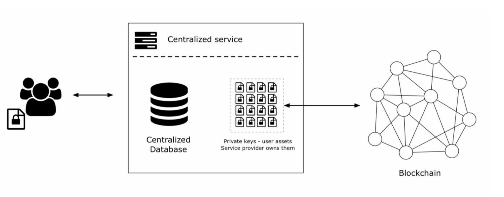
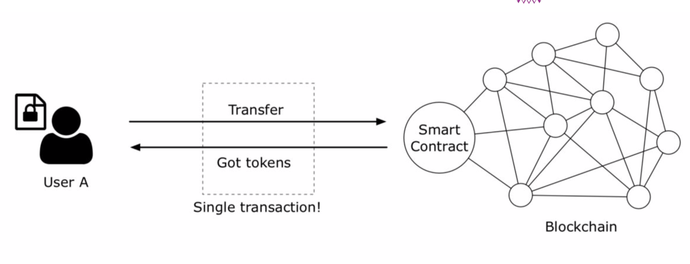
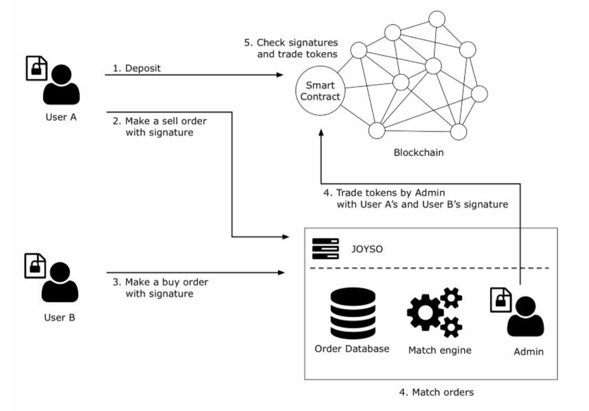

進入區塊鏈的起手式 - 交易所
在上一篇，進入區塊鏈的起手式篇 - 錢包篇，我們知道了區塊鏈錢包的應用，那我們這些錢包的錢該從哪裡來呢？
- 挖礦 （透過耗費電腦之算力來完成）
- 場外交易（透過私底下的會面或聯絡來完成的交易做法，我們俗稱 OTC ）
- 交易所（透過一個平台方來完成法幣出入金的做法，購買後再轉帳至自己的錢包）
那我們今天就來聊聊這個交易所吧！
交易所
- 中心化交易所
- 去中心化交易所
- 混合式交易所
- 小結
- 參考資料
中心化交易所
我們一般可能會說密碼貨幣交易所一定會把數據在鏈上，但是中心化交易所將放在鏈上這件事情捨棄掉。
- 優點：交易速度快、使用者體驗好、能夠尋求客服…等服務
- 缺點：數據在Server上，如果有駭客攻擊交易所的安全性就會有疑慮!

去中心化交易所
真正運作在區塊鏈上的交易所，所有的執行規則都採用智能合約來完成。
- 優點：合約完全公開透明、不容易被攻擊
- 缺點：速度慢、難搓合、使用者體驗差、出問題找不到人問

混合式去中心化交易所
透過搓合方式，交易是利用智能合約來做執行。
- 優點：有使用者體驗、合約公開透明
- 缺點：速度慢、系統仍然有可能被攻擊

小結
今天介紹了很多的交易所！ 基本上都會有一些限制，跟交易費用差異跟交易檢查速度差異！
若文章有任何的問題或要討論的部分，歡迎在底下留言。 歡迎透過 Email: pandap.d819@gamil.com 聯絡我。